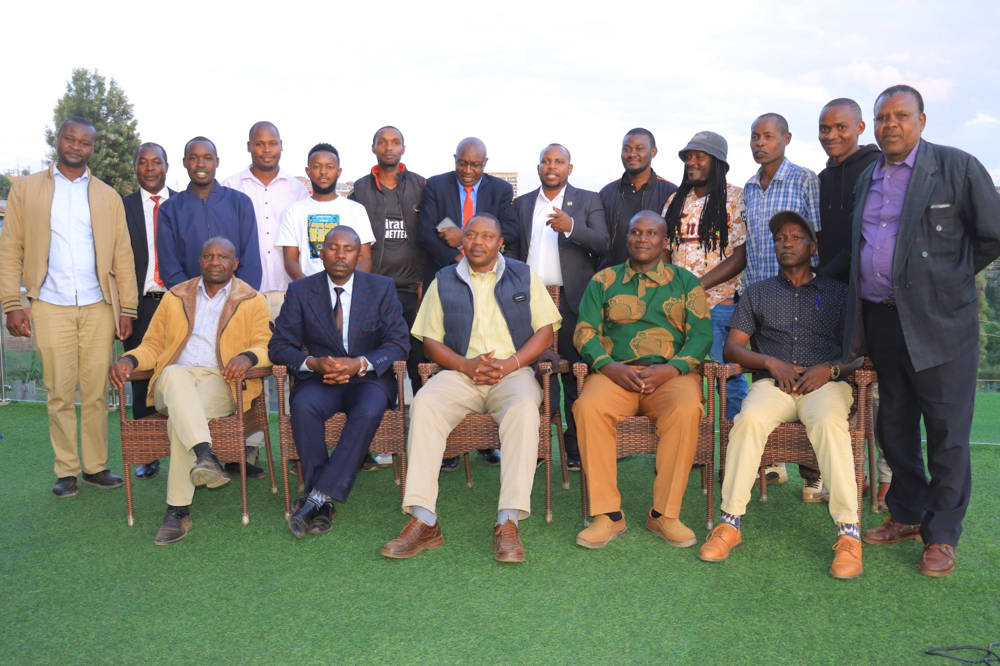

OSTORG
Truly I tell you, whatever you did to one of the least of these brothers and sisters of mine, you did for me.
Empowering vulnerable children and youth through compassionate care, support, and opportunities for a safer, brighter future.
Create a community where every person is protected, valued, and able to thrive free from harm and exploitation.
To provide holistic support and empowerment to survivors of abuse, neglect, and exploitation, enhancing their well-being and resilience.

A registered Community Based Organization dedicated to providing a safe haven for vulnerable children and youth in Keroka town and environs.
We open our doors to orphans, teenage mothers, victims of dysfunctional families, and those who are neglected and abused. Our mission is to offer them rehabilitation and reintegration into mainstream society.
Learn Our StoryComprehensive support for those in need
Protection and secure housing for vulnerable children and youth
Medical care, counseling, and psycho-social support
Skills training and education for sustainable livelihoods
Legal support and advocacy for vulnerable groups
These vulnerable groups need food, clothing, bedding, personal effects, and training materials. Partner with us to put a smile on the faces of the least of these in our midst.
Get Involved Today